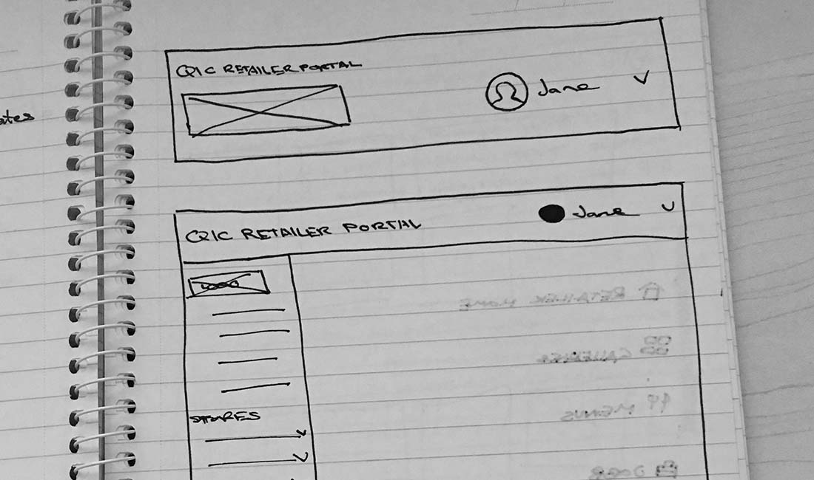
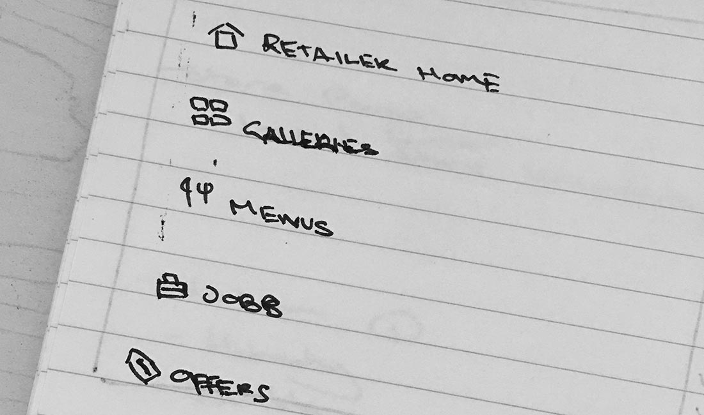
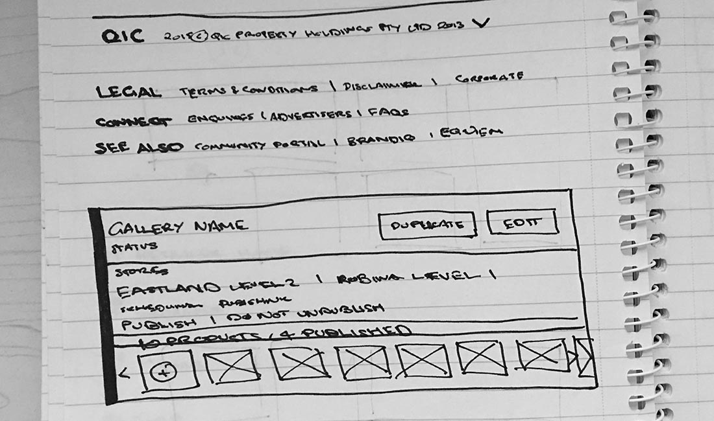
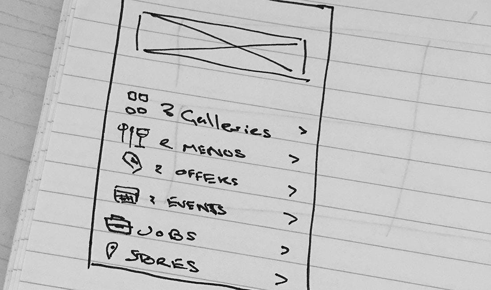

The Process
BRIDGING BRANDS ACROSS PLATFORMS
Making the retailer portal a really fluid experience was important to me. I wanted users who came to the portal to feel like they could accomplish any edits they needed to do. This lead me to use a more app-like paradigm which made it easy to accomodate the breadth of options available for a user.

Exploring different options for the navbar

Thinking of different category icons

Sketching out the footer and a gallery card

Wireframing a retailer card for the super user dashboard
It was important for the client that this CMS felt a part of their brand. This really comes through in the use of typography and restricted colour. A baseline grid was also used to fully evoke the rigidity and structure of the brand.